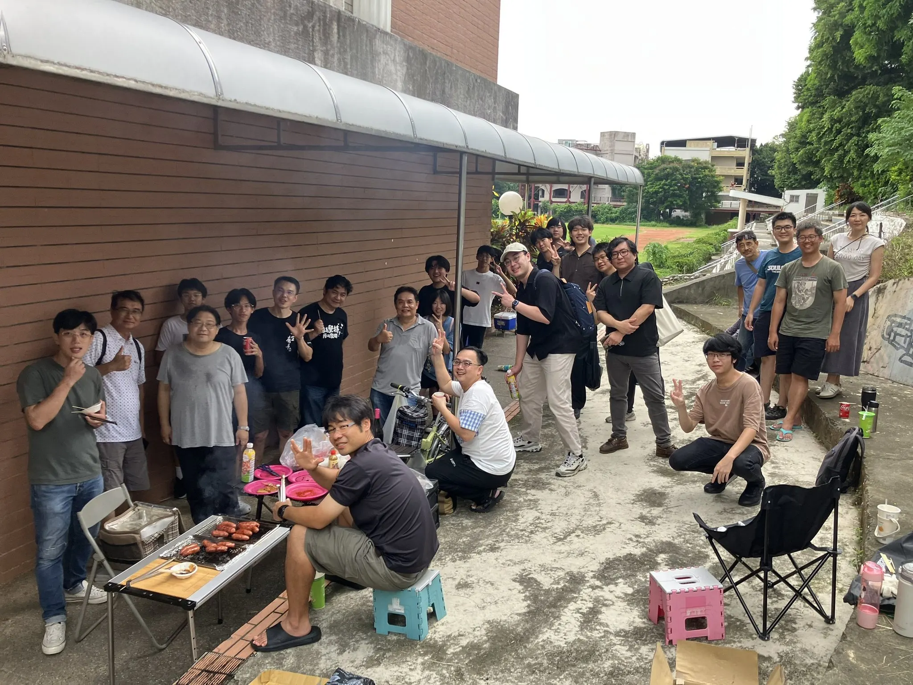
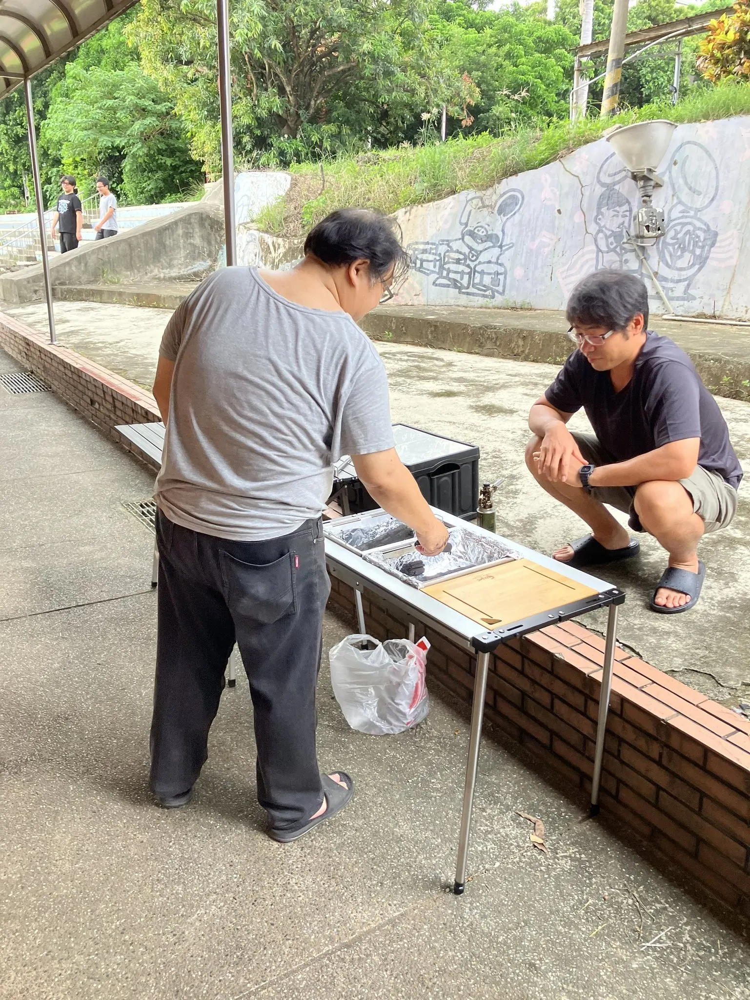
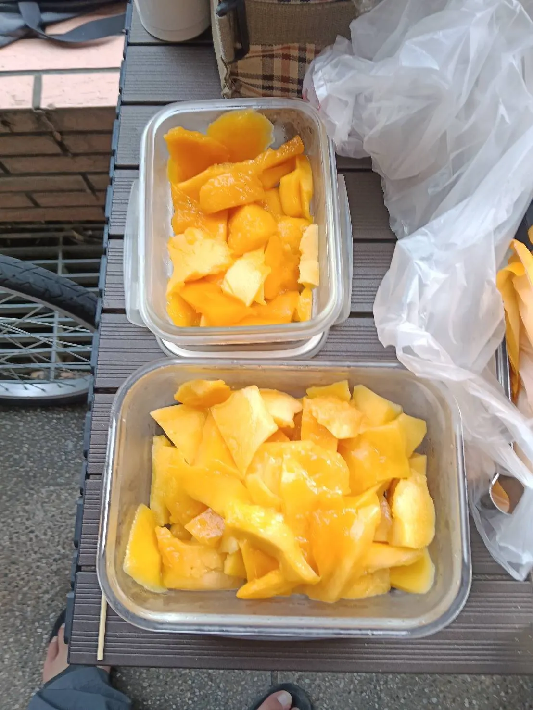

校友聯合音樂會前，嘉中管樂總有一項不寫進行程表、卻幾乎從不缺席的傳統：莫名其妙烤香腸大會。8 月 1 日午後，社辦外的烤架一架起來，校友與在校生就接力報到。有人從外縣市趕回來，有人一到先確認香腸熟了沒；比起集合時間更準時的，是那句「我等一下過去」。
這一天的路程，有人是從外縣市開回嘉義；最有說服力的則是校友張永澤——剛從美國返臺，就直奔社辦報到。跨過的時差還沒完全散去，香腸先到手。這大概就是嘉中管樂的奇妙召喚：不一定先問你練了沒，只要烤架一升溫，大家就知道該回來了。
先把香腸烤好，再把聲音接回來
烤架前有人顧火、有人遞吐司；桌上有可樂、有點心，還有魏仕杰帶來的兩盒芒果。大家一邊吃、一邊聊起各自的近況，也順便交換最近練到哪一段。對很多人來說，這不只是開吃前的集合：它是每年回到社辦、重新接上夥伴的第一個音。


這個週末，嘉中管樂的音樂接力不停
- 8 月 1 日晚間：校友與在校生也在嘉義長青園演藝廳參與《響十天堂》Brass Ensemble的演出。
- 8 月 2 日（日）15:00：校友的南風薩克斯風四重奏《透南風》將在嘉義南門教會登場，14:30 開放入場，免費入場。
演出倒數一週：明天團練改到晚上
距離 8 月 8 日第 41 屆《為伍》校友暨在校生聯合音樂會只剩一週。提醒大家：明天（8/2）的團練調整到晚上，請不要照原本下午時段前來，實際集合細節請以最新通知為準。接下來一週每天晚上都會有團練集訓；不管今年有沒有上台演出，都歡迎隨時回社辦湊熱鬧、聽聽大家的聲音，或乾脆坐下來一起吹幾個音。
香腸會吃完，烤架會收起來，但回到社辦的理由還在。這一週，嘉中見！